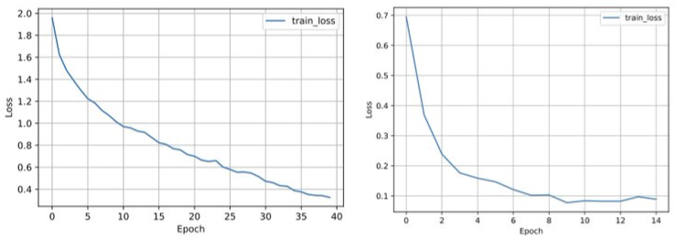
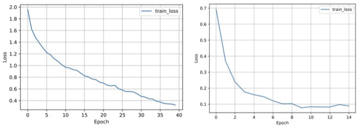
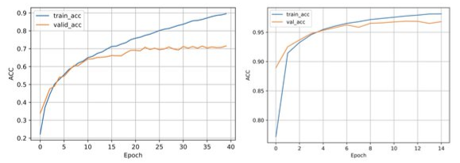
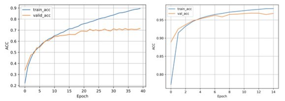
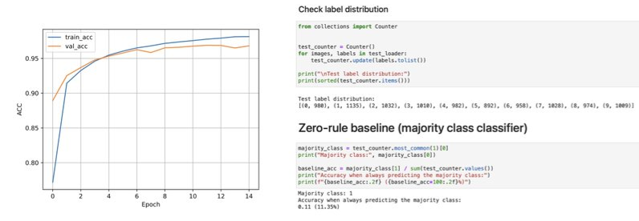
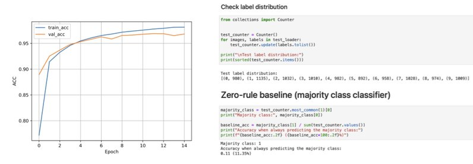

DL
Misc
- Packages
- {{weightwatcher}}
- Raschka (thread)
- General
- Make sure training loss converged
- Want to see a plateau in the loss (y-axis)
- Left: bad; Right: better
- Want to see a plateau in the loss (y-axis)
- Check for overfitting
- Don’t want the gap between training and validation accuracy to be too large
- Left: bad; Right: better
- Don’t want the gap between training and validation accuracy to be too large
- Compare accuracy to a zero-rule baseline
- Check that the validation accuracy is substantially better than a baseline based on always predicting the majority class (aka zero-rule classifier)
- Top chunk of code is just to determine which class is the majority class, which is class 1 with 1135 observations (aka examples)
- Bottom chunk calculates the accuracy if a model just choose to classify each observation as class 1
- Check that the validation accuracy is substantially better than a baseline based on always predicting the majority class (aka zero-rule classifier)
- Look at failure cases
- Always useful to check what cases the model gets wrong.
- Analysis of these cases might detect things like mislabeled data
- Plot at a confusion matrix
Example: PyTorch digit classifier
import matplotlib from mlxtend.plotting import plot_confusion_matrix from torchmetrics import ConfusionMatrix cmat = ConfusionMatrix(num_classes=len(class_dict)) for x, y in dm.test_dataloader(): with torch.inference.mode(): pred = lightning_model(x) cmat(pred, y) cmat_tensor = cmat.compute() cmat = cmat_tensor.numpy() fig, ax = plot_confusion_matrix( conf_mat=cmat, class_names=class_dict.values(), norm_colormap=matplotlib.colors.LogNorm() ) plt.xticks(rotation=45, ha="right", rotation_mode="anchor") plt.savefig('cm.pdf') plt.show()
- Make sure training loss converged
- New Architecture
- Check that you can overfit 1000 data points, by using the same training and validation.
- PyTorch Lightning has this flag
- The loss should be near zero (because the network should be able to memorize it); if not, there’s a bug in your code.
- Check that you can overfit 1000 data points, by using the same training and validation.
- Run {{weightwatcher}}}} and check that the layers have converged individually to a good alpha, and exhibit no rank collapse or correlation traps.
- General
{kind=link}
{kind=link}
{kind=link}
{kind=link}